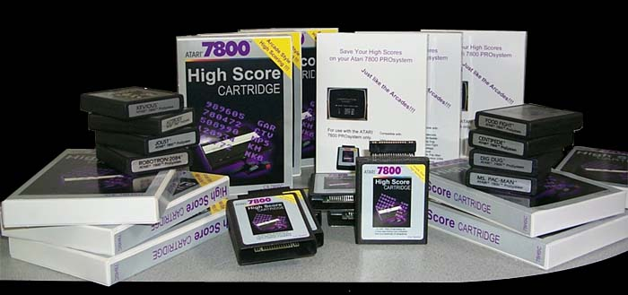
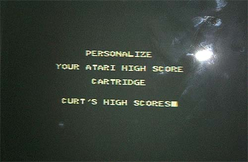
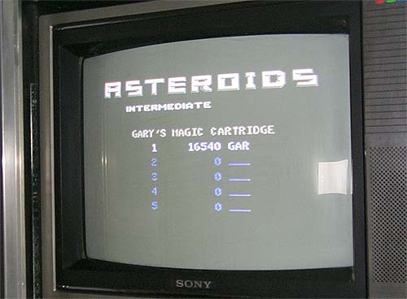
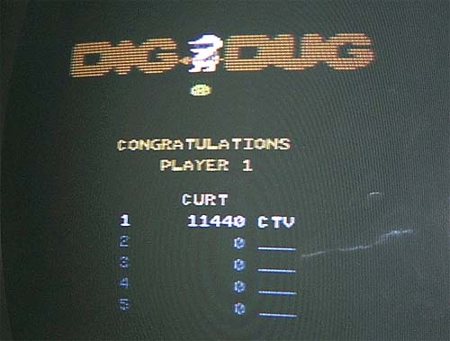
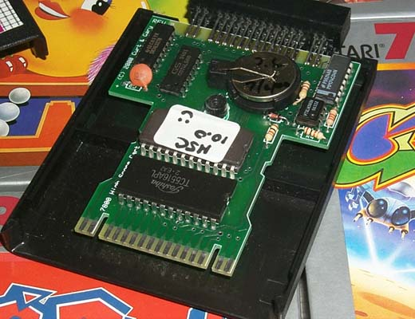
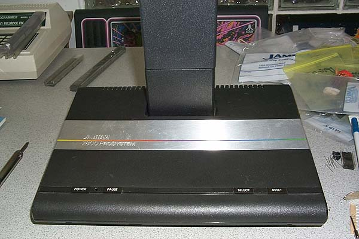

Atari 7800
High Score Cartridge
Modern Remake (2000/2001)
Some History:
The Atari 7800 High Score cartridge was a proposed add-on peripheral originally
designed by GCC and turned over to Atari for PCB layout and case design.
Gary Rubio was in charge of building, testing and cost reducing the project.
In July of 1984, 1 month after the initial release of the Atari 7800 PROSystem
Atari was sold and the Atari 7800 was put on hold. All
of the peripherals (including the high score cartridge) were permanently
canceled. In the spring of 1999 Gary Rubio contacted
Curt Vendel and after he discussed his role in the Atari Consumer Electronics
Division. Gary sent Curt information regarding the Atari 7800 High Score
cart and explained that it had never even made it to the breadboard stage,
Curt and Gary toyed around with the idea of actually building the cartridge
for classic Atari 7800 users to enjoy. Finally one piece of
the Atari 7800 legacy would make it into the hands of the game players.
So during a trip out to California in November of 1999 Gary gave Curt
the original ROM code for the cartridge and on old schematic that GCC had
drawn up. Several months later the result is the first
ever Atari 7800 High Score Cartridges to ever exist.

Owners Update
Attention all earlier
7800 High Score Cartridge owners. Do NOT leave
your 7800 High Score cartridge
plugged into your
Atari 7800 PROsystem console when not in use. This will quickly
drain the
battery in your
High Score Cartridge causing loss of Personalization and Scores.
FREE "Rev
3.1" upgrade available to correct this problem, please
email
to arrange to
ship your cartridge
for upgrade, FREE battery, brand new cartridge included too!
To Purchase the new 7800 High Score Cartridge
Click on one of the four authorized dealers:
B&C
Atari Sales and Video61 Atari Sales
4 Jays Video
Game Sales and Atari7800.com
What I would like to
do is make an official owners database here on this page. So
if you've purchased a 7800 High Score cartridge, please
send
me an email with your full name, State/Country and your Serial #.
The Serial#'s can be found on the plastic bag, inside cartridge case covers
and on the back of the high score electronics board itself.
Serial #'s range from 006-120 (001-005 are being kept by myself and Gary.
The major difference in these 5 cartridges which makes them unique is that
they do NOT have a hole drilled in the center of the cartridges for the
plastic case post. {it'll be really hard to fake a prototype with a piece
of the actual board missing, right?} So who knows, maybe in 10-20
years these will end up becoming sought after prototypes.... maybe not
:-)
I hope everyone who
has received their High Score cartridges is happy with them and enjoying
them. If you have any questions, please feel free to
drop me a line, thanks!
Curt.
Below you will see some photo's of the
7800 carts in various stages:

First thing you do is personalize your
cartridge so you now its yours....

After a game is over you will be taken
to the high score screen, if your score is
within the top 5 the cursor will flash
and you move the joystick left-right or up-down
to move to a letter or symbol, press the
fire button to select. Move to a solid block
to complete. Gary has personalized
his cart and there is his high score on Asteroids.

Here is my high score on Dig Dug, mind
you these are practice games to test the
high score cart capabilities, so no snickering
at the low scores! :-)

This is the 7800 HSC (Revision 2) board.
The design was tough as the cart had to meet certain criteria in order
to make it simple and inexpensive to build and sell. The cart
is designed to fit into a slightly modified Atari 7800 cartridge casing.
There are 16 separate components that make up the cartridge and as you
can see, space is very tight. Originally I had wanted
to design a module that would sit flush on-top of the Atari 7800, but due
to the angle of the 7800, however the module would have had to have been
in two parts with an angled connector or ribbon cable, so I opted not to
go this route.

Its not the most attractive set-up (sorta
like a 5200 with a CX55 2600 adapter and cartridge arrangement) but its
simple to use and works and in the end, that's what counts.

A row of high score carts being built
and readied for their 2732 ROM code and off to testing....